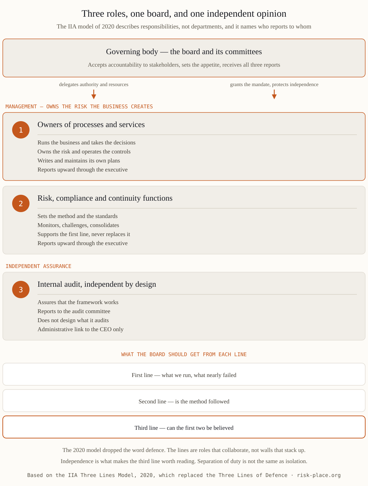

The phrase most policies still carry — "three lines of defence" — belongs to a model the Institute of Internal Auditors retired in July 2020. The replacement changed three things that matter in practice. It describes roles rather than departments, so the argument about which box a team sits in gives way to a sharper question about which of its activities are first line and which are second. It puts the governing body inside the picture rather than above it, with delegation flowing down and reporting flowing up, which forces anyone presenting the model to state who reports to whom. And it drops the military metaphor, because defence implied stacked walls and rewarded distance between the lines. One element did not change and never should — the independence of the third line. If your policy still lists three departments under the heading "lines of defence", you are explaining the 2013 version to a board that has probably read the current one.
The dispute is almost always about the same four teams: risk, information security, quality, and continuity. Titles and reporting lines do not settle it; the nature of the activity does. Ask one question of each activity — does it create or accept an exposure on behalf of the business, or does it set method, monitor and challenge? Administering a firewall is first-line work even inside a security department, because the administrator makes the changes that create exposure. Setting the method for impact analysis, owning the exercise calendar and challenging the quality of a plan are second line. Writing the continuity plan for a service you do not run is the second line doing first-line work, the most damaging blur in this field, because it produces documents that no risk owner feels obliged to defend. One page usually ends the debate — a RACI over identify, assess, control, monitor, report and escalate, with a named function in every cell.

Directors do not need the diagram. They need to know where their comfort comes from and how much of it is independent. The script runs like this. Management runs the business and owns the risks the business creates. Specialist functions set the method and challenge what management reports. Internal audit says whether the first two can be believed. Then hand the board three questions, one per line — what nearly went wrong this quarter and what changed as a result; where the second line disagreed with the first and what happened next; and what share of the assurance in front of us is independent of the executives being assessed. The honest answer to the third is usually "a small share", and that number, not the diagram, is the real conversation. Where accountability stops being delegable is set out in our note on the board's role in resilience.
A model that lives only on a slide is not a control. Five artefacts make it real. A risk management policy that names three sets of responsibilities rather than three departments. Charters for the risk function and for internal audit, approved by the board or its audit committee, stating independence, access and the right to escalate. The RACI. An assurance map showing, for every material risk and every important service, which line provides what evidence, how often and to whom. And a reporting calendar in which escalation is expressed in hours rather than intentions. Then watch four health indicators — issues raised by the first line rather than found by the third, second-line challenge visible in minutes rather than in corridors, audit findings accepted with dates against names, and at least one recorded disagreement between the lines in the past year. A framework with no recorded disagreement is not harmonious, it is quiet. Building this architecture is the subject of module M6 of the ERGP programme.
Assurance design — charters, the assurance map and the reporting that makes three lines visible to a board — is module M6 of ERGP, the first resilience governance certification fully available in Arabic, also in English.
Explore the ERGP programme